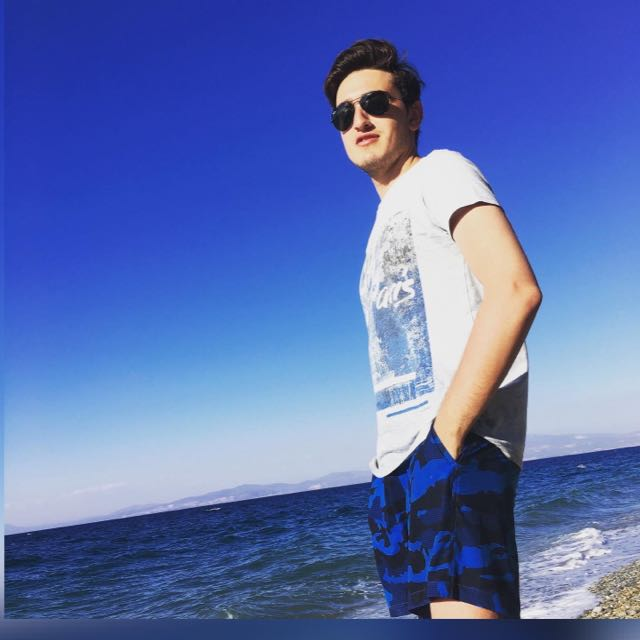
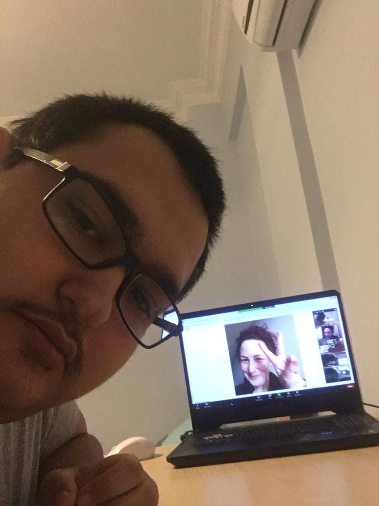

Eren,şu anda Almanya'da bilgisayar mühendisliği okumak için hazırlanmaktadır.Kendisi 19 yaşındadır.En sevdiği hobileri Bannerlord oynamak ve Hüseyin'e soru sormaktır. Arada bir yeni atraksiyonlara girer. Aklında gelecekteki projeleri vardır. Yazılımdan para kazanmak ve zengin olmak istemektedir.
Ona göre insanlar eşit değildir ve her zaman parayı veren düdüğü çalmalıdır.
Bundan dolayı kapitalist para babalarını ve süpergüçleri desteklemektedir.Büyük firmalara bayılır.
.
En sevdiği repliği,'Hüseyin, ben bunu anlamadım' dır.
.
Hüseyin,şu anda Bilkent Üniversitesinde İngiliz Dili Ve Edebiyatı bölümünde okumaktadır.Kendisi 19 yaşındadır.En sevdiği hobisi hamburger yiyip kod yazmaktır.Arada bir sokakta köpeklerle oynar. Aklında gelecekteki projeleri vardır.Paylaşmayı,kardeşliği savunan kişiliktir.
Ona göre bir proje herkesle paylaşılmalı,insanların daha adil bir dünyaya Sahip olduğunu düşünmektedir.
Bundan dolayı özgün yazılımcılığı ve Açık kaynak kodlu yazılımları desteklemektedir.Büyük firmaları sevmez.
Hedefi doğrultusunda birçok kayıp vermeye razıdır.
En sevdiği repliği,"Eren saçmalıyorsun şu an"'dır.
Kendisi metalica hayranıdır.